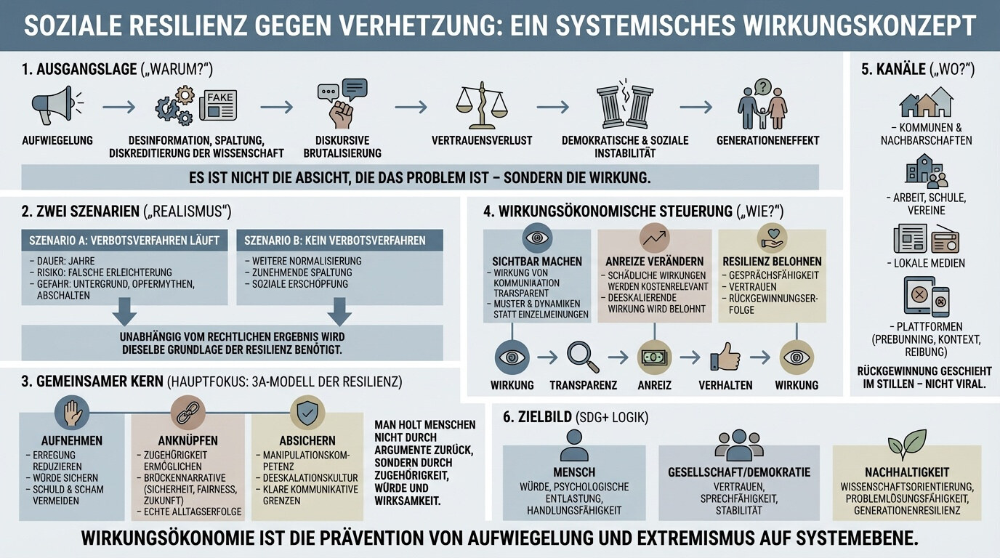

Einleitung - Ziel, Rahmen und Begriffe
Dieser Artikel beschreibt ein gesellschaftliches Gesamtkonzept zur Stärkung sozialer Resilienz gegenüber Verhetzung. Es richtet sich an Politik, Medien, Zivilgesellschaft und Wissenschaft und verfolgt einen wirkungsorientierten Ansatz.
Ausgangspunkt ist die Beobachtung, dass Verhetzung nicht nur in Form offener Hassrede auftritt, sondern als komplexer Wirkungsprozess, der über Desinformation, Polarisierung, Wissenschaftsdiskreditierung und diskursive Eskalation langfristig gesellschaftliche, demokratische und ökonomische Schäden erzeugt. Diese Wirkungen entstehen häufig unterhalb strafrechtlicher Schwellen und bleiben deshalb in bestehenden Steuerungs- und Regulierungslogiken weitgehend unbeachtet.
Ziel dieses Artikels ist es nicht, Meinungen zu bewerten oder zu verbieten. Es geht vielmehr darum, die realen gesellschaftlichen Wirkungen bestimmter Kommunikationsmuster sichtbar zu machen und daraus systemische Antworten abzuleiten, die demokratische Resilienz stärken und zukünftige Verhetzungsdynamiken unwahrscheinlicher machen.
Begriffliche Klarstellung
Verhetzung bezeichnet in diesem Artikel keinen einzelnen Akt und keine juristische Kategorie, sondern einen Wirkungsprozess. Gemeint ist das Zusammenspiel aus emotionaler Aufwiegelung, Desinformation, Polarisierung, Wissenschafts- und Institutionendiskreditierung sowie entmenschlichenden Narrativen, das über Zeit Vertrauen zerstört, Diskurse verroht und demokratische Stabilität untergräbt.
Resilienz wird hier nicht als individuelle Anpassungsleistung verstanden, sondern als gesellschaftliche Fähigkeit, mit Konflikten, Krisen und Meinungsvielfalt umzugehen, ohne in Eskalation, Spaltung oder demokratische Erosion zu geraten.
Wirkung bezeichnet die realen, beobachtbaren Folgen von Handlungen, Kommunikation und Strukturen auf Menschen, Gesellschaft und Demokratie - unabhängig von der Absicht einzelner Akteure.
Wirkungsökonomie beschreibt eine Steuerungslogik, die nicht primär auf Moral, Gesinnung oder Meinungsinhalte fokussiert, sondern auf die messbaren gesellschaftlichen Wirkungen von Handeln. Sie ermöglicht es, schädliche Dynamiken sichtbar zu machen, Anreizstrukturen zu verändern und positive Wirkungen systematisch zu stärken.
Hassrede wird in diesem Artikel als eine mögliche Erscheinungsform von Verhetzung verstanden, jedoch nicht als deren Oberbegriff. Verhetzende Wirkungen können auch ohne offene Beschimpfung oder Hasssprache entstehen.
Abgrenzung
Dieser Artikel ist kein Verbotskonzept, kein Medienethikkodex und kein pädagogisches Handbuch. Es versteht sich als systemischer Rahmen, der bestehende rechtliche, kommunikative und politische Instrumente ergänzt, nicht ersetzt.

1. Ausgangslage - Warum gesellschaftliche Resilienz gegen Verhetzung notwendig ist
Verhetzung ist kein Randphänomen, kein Ausrutscher einzelner Akteure und kein ausschließlich sprachliches Problem. Sie ist ein systemischer Wirkungsprozess, der sich über Zeit entfaltet und tief in gesellschaftliche Strukturen eingreift.
Der entscheidende Punkt dabei ist: Nicht die Absicht ist das Problem - sondern die Wirkung.
In modernen Gesellschaften entsteht Verhetzung häufig nicht primär durch offenen Hass, sondern durch ein Zusammenspiel aus emotionalisierender Kommunikation, Desinformation, gezielter oder struktureller Spaltung sowie der fortschreitenden Diskreditierung von Wissenschaft, Institutionen und demokratischen Verfahren. Diese Dynamiken wirken meistens schleichend, unterhalb strafrechtlicher Schwellen - aber mit erheblichen langfristigen Folgen.
1.1 Aufwiegelung als Ausgangspunkt
Am Anfang steht selten Gewalt, sondern Aufwiegelung: eine dauerhafte emotionale Aktivierung von Angst, Wut, Kränkung oder Bedrohungsgefühlen. Diese Aufladung kann offen, subtil oder indirekt erfolgen - etwa durch permanente Krisenrhetorik, Übertreibung, selektive Faktenwahl oder das Erzeugen diffuser Feindbilder.
Aufwiegelung bindet Aufmerksamkeit, reduziert Komplexität und verschiebt den Fokus weg von Lösungen hin zu Schuldzuweisungen. Sie ist damit der erste Schritt in einer Wirkungskette, die gesellschaftliche Resilienz untergräbt.
1.2 Desinformation, Spaltung und Wissenschaftsdiskreditierung
Aufwiegelung entfaltet ihre Wirkung besonders dort, wo Realität systematisch verzerrt wird. Desinformation bedeutet dabei nicht nur das Verbreiten falscher Fakten, sondern auch das gezielte Erzeugen von Zweifel: an wissenschaftlichen Erkenntnissen, an journalistischer Arbeit, an demokratischen Institutionen.
Gleichzeitig wird gesellschaftliche Spaltung vertieft. Komplexe Probleme werden entlang von Identitätslinien verhandelt - „wir gegen sie“ ersetzt sachliche Auseinandersetzung. Wissenschaftliche Erkenntnisse, etwa zum Klimawandel oder zu gesellschaftlichen Transformationsprozessen, werden nicht argumentativ widerlegt, sondern delegitimiert.
Das Ergebnis ist nicht mehr Streit über Lösungen, sondern Streit über Wirklichkeit.
1.3 Diskursive Brutalisierung
Wenn Aufwiegelung, Desinformation und Spaltung dauerhaft wirken, verändert sich der öffentliche Diskurs selbst. Sprache wird schärfer, enthemmter, aggressiver. Grenzverschiebungen normalisieren sich: Was gestern noch unsagbar war, wird heute wiederholt, relativiert oder ironisiert.
Diese diskursive Brutalisierung betrifft nicht nur extreme Ränder. Sie prägt Medienlogiken, soziale Netzwerke, politische Debatten und private Gespräche. Damit verändert sie, was gesellschaftlich als legitim, sagbar oder akzeptabel gilt.
1.4 Vertrauensverlust
Ein zentraler Schaden dieser Entwicklung ist der Verlust von Vertrauen: Vertrauen in Institutionen, in demokratische Verfahren, in Wissenschaft, in Medien - und zunehmend auch Vertrauen zwischen gesellschaftlichen Gruppen.
Ohne Vertrauen verlieren Gesellschaften ihre Fähigkeit zur kooperativen Problemlösung. Entscheidungen werden nicht mehr als Ergebnis legitimer Verfahren akzeptiert, sondern als Ausdruck von Macht, Manipulation oder Täuschung wahrgenommen.
Vertrauensverlust ist damit kein Nebenprodukt, sondern eine zentrale Wirkung von Verhetzungsprozessen.
1.5 Demokratische und soziale Instabilität
Wo Vertrauen schwindet und Diskurse eskalieren, geraten demokratische Systeme unter Druck. Konflikte werden nicht mehr konstruktiv ausgetragen, sondern emotional aufgeladen. Kompromissfähigkeit sinkt, politische Handlungsfähigkeit wird blockiert.
Gleichzeitig steigen soziale Spannungen, Erschöpfung und Rückzug. Gesellschaften verlieren Energie für Zukunftsfragen, Innovation und Transformation - mit direkten Auswirkungen auf wirtschaftliche Stabilität, Investitionsbereitschaft und soziale Kohäsion.
1.6 Generationeneffekt
Besonders gravierend ist der Generationeneffekt von Verhetzung. Narrative, Feindbilder und Misstrauen werden kulturell gespeichert und weitergegeben - über Familien, Medienroutinen, Bildungserfahrungen und politische Sozialisation.
Verhetzung verschwindet daher nicht automatisch mit einzelnen Akteuren oder Parteien. Ohne gezielte Gegensteuerung prägt sie Einstellungen, Weltbilder und Diskursformen über Jahrzehnte hinweg.
Verhetzung ist kein individuelles Fehlverhalten, sondern ein Wirkungsprozess mit systemischer Reichweite. Sie beginnt mit emotionaler Aufwiegelung, verzerrt Realität, verroht Diskurse, zerstört Vertrauen und destabilisiert demokratische und soziale Strukturen - häufig schleichend, häufig generationenübergreifend.
Deshalb reicht es nicht aus, Verhetzung nur moralisch zu verurteilen, juristisch zu sanktionieren oder kommunikativ zu kontern. Notwendig ist ein Ansatz, der Wirkungen sichtbar macht, strukturelle Anreize verändert und gesellschaftliche Resilienz systematisch stärkt.
2. Zwei Szenarien - Realismus statt Illusionen
Die gesellschaftliche Auseinandersetzung mit Verhetzung wird derzeit stark von einer juristischen Frage überlagert: Der Möglichkeit eines AfD-Parteiverbots. Diese Debatte ist legitim und wichtig. Sie birgt jedoch die Gefahr, den Blick auf das eigentliche Problem zu verengen.
Denn unabhängig vom Ausgang eines AfD-Verbotsverfahrens bleiben die gesellschaftlichen Wirkungen von Verhetzung bestehen. Ein realistischer Ansatz muss deshalb beide möglichen Entwicklungen berücksichtigen - und daraus ableiten, welche strukturellen Antworten in jedem Fall notwendig sind.
Dieses Kapitel betrachtet daher zwei Szenarien, ohne sie politisch zu bewerten. Ziel ist es, Illusionen zu vermeiden und den Bedarf an gesellschaftlicher Resilienz sachlich zu begründen.
2.1 Szenario A: Ein AfD-Verbotsverfahren wird eingeleitet
Ein eingeleitetes AfD-Verbotsverfahren ist ein komplexer, rechtsstaatlicher Prozess. Er ist zeitlich langwierig, juristisch anspruchsvoll und gesellschaftlich hoch aufgeladen.
Realistische Rahmenbedingungen
Verfahrensdauer: mehrere Jahre
hohe öffentliche Aufmerksamkeit
rechtliche Ungewissheit bis zum Abschluss
Zentrale Risiken dieses Szenarios
Trügerische Erleichterung Die Einleitung eines Verfahrens kann kurzfristig das Gefühl erzeugen, das Problem werde nun „gelöst“. Diese Erleichterung ist gefährlich, weil sie gesellschaftliche Wachsamkeit und Eigenverantwortung schwächt.
Verschiebung in informelle Räume Verhetzende Narrative verschwinden nicht automatisch. Sie verlagern sich in digitale Parallelöffentlichkeiten, private Netzwerke oder alternative Medienräume, wo sie weniger sichtbar, aber nicht weniger wirksam sind.
Opfer- und Märtyrer-Narrative Ein AfD-Verbotsverfahren kann bestehende Opfererzählungen verstärken. Institutionen werden als repressiv geframt, demokratische Verfahren als illegitim dargestellt. Dies kann die Bindung verhetzter Gruppen an demokratische Strukturen weiter schwächen.
Gesellschaftliches Abschalten Teile der Gesellschaft ziehen sich aus Debatten zurück, aus Erschöpfung oder dem Gefühl heraus, dass „sich andere kümmern“. Damit gehen Gesprächsfähigkeit und soziale Kohäsion weiter verloren.
Zwischenfazit Szenario A
Ein AfD-Verbotsverfahren kann rechtlich notwendig sein. Gesellschaftlich ersetzt es jedoch keine aktive Resilienzstrategie. Ohne begleitende Maßnahmen besteht das Risiko, dass sich verhetzende Wirkungen unter veränderten Bedingungen fortsetzen oder sogar verstärken.
2.2 Szenario B: Kein AfD-Verbotsverfahren
Auch das Ausbleiben eines AfD-Verbotsverfahrens ist ein realistisches Szenario. In diesem Fall bleibt verhetzenden Akteuren die formale politische Präsenz erhalten.
Zentrale Dynamiken dieses Szenarios
Fortschreitende Normalisierung Wiederholung erzeugt Gewöhnung. Positionen, die zunächst als extrem wahrgenommen wurden, verschieben mit der Zeit den öffentlichen Referenzrahmen. Das Sagbare dehnt sich aus, Grenzen werden unschärfer.
Zunehmende gesellschaftliche Spaltung Die Polarisierung verfestigt sich. Lagerdenken ersetzt Dialog, Identität ersetzt Argument. Gesellschaftliche Gruppen entfernen sich weiter voneinander - emotional, sozial und politisch.
Soziale Erschöpfung Dauerhafte Konflikte ohne erkennbare Lösungsperspektive führen zu Ermüdung. Menschen ziehen sich zurück, meiden politische Auseinandersetzungen und verlieren Vertrauen in die Gestaltungsfähigkeit demokratischer Prozesse.
Zwischenfazit Szenario B
Ohne strukturelle Gegensteuerung verstetigen sich die Wirkungen von Verhetzung. Die Schäden entstehen nicht abrupt, sondern schleichend - mit langfristigen Folgen für Demokratie, Wirtschaft und sozialen Zusammenhalt.
2.3 Gemeinsame Schlussfolgerung: Der blinde Fleck beider Szenarien
So unterschiedlich die beiden Szenarien erscheinen mögen, sie teilen einen zentralen blinden Fleck: Keines von beiden adressiert automatisch die gesellschaftlichen Wirkungsprozesse von Verhetzung.
Ein juristisches Verfahren kann rechtliche Grenzen setzen. Sein Ausbleiben kann politische Realität abbilden.
Beides beantwortet jedoch nicht die Fragen:
Wie werden verhetzte Menschen wieder anschlussfähig?
Wie verhindern wir weitere diskursive Verrohung?
Wie schützen wir kommende Generationen vor der Wiederholung derselben Dynamiken?
2.4 Konsequenz: Resilienz als gemeinsame Grundlage
Aus beiden Szenarien folgt dieselbe logische Konsequenz:
Unabhängig vom rechtlichen Ergebnis wird dieselbe Grundlage gesellschaftlicher Resilienz benötigt.
Diese Resilienz ist:
nicht repressiv
nicht parteipolitisch
nicht moralisierend
Sie ist strukturell, präventiv und wirkungsorientiert.
Damit ist der Übergang zum nächsten Kapitel gesetzt: dem gemeinsamen Kern des Konzepts.
Wenn weder AfD-Verbotsverfahren noch politische Normalisierung allein ausreichen, um die Wirkungen von Verhetzung zu begrenzen, stellt sich die zentrale Frage:
Wie kann gesellschaftliche Resilienz konkret aufgebaut werden?
Diese Frage beantwortet das folgende Kapitel mit dem 3A-Modell als systemischem Kern.
3. Gemeinsamer Kern - Das 3A-Modell gesellschaftlicher Resilienz
Wenn weder juristische Verfahren noch politische Normalisierung allein ausreichen, um die Wirkungen von Verhetzung zu begrenzen, braucht es einen Ansatz, der vor der Eskalation ansetzt, Menschen nicht verliert und künftige Verhetzung unwahrscheinlicher macht.
Der gemeinsame Kern dieses Konzepts ist deshalb das 3A-Modell gesellschaftlicher Resilienz. Es beschreibt drei aufeinander aufbauende Funktionen, die unabhängig von Parteipolitik, Verbotsfragen oder konkreten Akteuren wirken.
Das 3A-Modell ist kein Stufenprogramm im Sinne von „erst A, dann B, dann C“. Es ist eine gleichzeitig wirksame Struktur, die gesellschaftliche Stabilität ermöglicht.
3.1 Abholen - emotionale Entkopplung statt Konfrontation
Verhetzung bindet Menschen nicht primär über Argumente, sondern über Emotionen: Angst, Wut, Kränkung, Kontrollverlust. Wer in diesem Zustand angesprochen wird, ist kaum erreichbar für Fakten, Appelle oder moralische Bewertungen.
Abholen bedeutet daher nicht Zustimmung, sondern Deeskalation.
Zentrale Elemente sind:
Reduktion von Übererregung Verlangsamung von Diskursen, Unterbrechung permanenter Empörung, Senkung des emotionalen Dauerdrucks.
Wahrung von Würde Menschen müssen die Möglichkeit haben, sich von verhetzenden Positionen zu lösen, ohne öffentlich beschämt oder moralisch entwertet zu werden.
Vermeidung von Schuld- und Schamspiralen Schuldzuweisungen verstärken Rückzug, Trotz oder Radikalisierung. Abholen schafft Distanz zur Ideologie, ohne die Person abzuwerten.
Abholen ist damit eine Voraussetzung für alles Weitere. Ohne emotionale Entkopplung bleibt jede Anschluss- oder Präventionsstrategie wirkungslos.
3.2 Anschließen - Zugehörigkeit ohne Feindbilder
Menschen verlassen verhetzende Narrative selten, solange diese ihre einzige Quelle von Zugehörigkeit, Sinn und Erklärung bleiben. Deshalb reicht es nicht, problematische Positionen zu kritisieren - es braucht alternative Anschlussmöglichkeiten.
Anschließen bedeutet:
Zugehörigkeit ermöglichen, ohne neue Fronten aufzubauen Gesellschaftliche Integration gelingt dort, wo Menschen sich gesehen fühlen, ohne sich über Abwertung anderer definieren zu müssen.
Brücken-Narrative anbieten Statt Identität gegen Identität zu stellen, werden gemeinsame Bezugspunkte betont: Sicherheit, Fairness, Zukunftsfähigkeit, Würde, Verlässlichkeit.
Echte Alltagserfolge ermöglichen Anschluss entsteht nicht nur durch Sprache, sondern durch Erfahrung: funktionierende Nachbarschaft, sinnvolle Arbeit, gemeinsames Gestalten, konkrete Wirksamkeit.
Anschließen verschiebt den Fokus weg von ideologischen Deutungen hin zu gemeinsamer Handlungsfähigkeit. Es ersetzt Feindbilder nicht durch neue Narrative, sondern durch reale soziale Einbindung.
3.3 Absichern - Prävention statt Dauerreaktion
Abholen und Anschließen wirken im Hier und Jetzt. Absichern richtet den Blick nach vorn: auf die Frage, wie Gesellschaften widerstandsfähiger gegen zukünftige Verhetzung werden.
Absichern umfasst:
Manipulations- und Medienkompetenz Nicht im Sinne reiner Wissensvermittlung, sondern als Fähigkeit, emotionale Steuerungsmechanismen, Desinformation und Polarisierungsstrategien zu erkennen.
Etablierung einer Deeskalationskultur Konflikte werden nicht vermieden, sondern so geführt, dass sie nicht eskalieren oder entmenschlichen.
Klare kommunikative Grenzen Nicht jede Eskalation wird beantwortet, nicht jede Provokation verstärkt. Grenzen dienen hier der Stabilisierung des Diskurses, nicht der Unterdrückung von Meinungen.
Absichern ist keine Einschränkung von Freiheit, sondern eine Voraussetzung für dauerhafte Gesprächsfähigkeit in pluralen Gesellschaften.
3.4 Zusammenspiel der drei Elemente
Die drei Elemente wirken nur gemeinsam:
Ohne Abholen bleibt Anschließen unerreichbar.
Ohne Anschließen bleibt Abholen instabil.
Ohne Absichern beginnen dieselben Dynamiken von vorn.
Das 3A-Modell ist damit kein kurzfristiges Interventionsprogramm, sondern ein dauerhaftes Resilienzfundament.
3.5 Zentrale Leitthese des 3A-Modells
Menschen holt man nicht durch Argumente zurück, sondern durch Zugehörigkeit, Würde und Wirksamkeit.
Diese Leitthese markiert den Übergang von reaktiver Debatte zu präventiver Gesellschaftsgestaltung.
3.6 Das Bühnen-Problem - Warum Gegenrede verstärkt
Ein zentraler, häufig unterschätzter Mechanismus von Verhetzung ist das sogenannte Bühnen-Problem. Verhetzende Positionen wirken nicht nur durch Zustimmung, sondern vor allem durch Aufmerksamkeit.
In hochdynamischen Medien- und Plattformlogiken bedeutet jede öffentliche Reaktion - ob Zustimmung, Empörung, Widerspruch oder Faktenkorrektur - eine Form von Verstärkung. Sichtbarkeit erzeugt Relevanz. Relevanz erzeugt Anschlussfähigkeit.
Gut gemeinte Gegenrede verfehlt deshalb häufig ihre Wirkung. Fakten ändern selten emotionale Bindungen. Stattdessen werden Widersprüche in bestehende Opfer- und Feindnarrative integriert: „Seht ihr, alle sind gegen uns.“ So wird aus Kritik Bestätigung.
Das Bühnen-Problem ist kein individuelles Kommunikationsversagen, sondern eine strukturelle Wirkung moderner Öffentlichkeit. Es erklärt, warum Verhetzung selbst dann zunimmt, wenn ihr massenhaft widersprochen wird.
Gesellschaftliche Resilienz erfordert daher nicht permanente Reaktion, sondern strategische Nicht-Verstärkung:
bewusster Entzug öffentlicher Bühnen
Verlagerung von Rückholung in leise, nicht-öffentliche Kontexte
klare Unterscheidung zwischen Grenzziehung und Aufmerksamkeitsvergabe
Nicht alles, was gesagt werden darf, muss verstärkt werden.
Das 3A-Modell beschreibt, was gesellschaftliche Resilienz ausmacht. Die nächste Frage lautet jedoch:
Wie lässt sich dieses Modell systemisch verankern und steuern, ohne Meinungen zu kontrollieren oder Diskurse zu ersticken?
Diese Frage beantwortet das folgende Kapitel mit der wirkungsökonomischen Steuerungslogik.
4. Wirkungsökonomische Steuerung - Wie gesellschaftliche Resilienz konkret operationalisiert werden kann
Die bisherigen Kapitel haben gezeigt, warum Verhetzung ein systemisches Problem ist und was gesellschaftliche Resilienz ausmacht. Dieses Kapitel beantwortet nun die zentrale Umsetzungsfrage:
Wie lässt sich gesellschaftliche Resilienz stärken, ohne Meinungen zu kontrollieren, Diskurse zu ersticken oder neue Machtkonzentrationen zu schaffen?
Die Antwort liegt in einer wirkungsökonomischen Steuerungslogik, die nicht auf Inhalte oder Gesinnungen zielt, sondern auf reale gesellschaftliche Wirkungen.
4.1 Warum Wirkung - nicht Meinung - der legitime Steuerungsmaßstab ist
Demokratische Gesellschaften leben von Meinungsfreiheit. Genau deshalb ist die Steuerung von Meinungsinhalten weder praktikabel noch legitim. Gleichzeitig zeigt die Erfahrung der letzten Jahre, dass ungezügelte Kommunikationsdynamiken erhebliche gesellschaftliche Schäden verursachen können - ohne gegen bestehendes Recht zu verstoßen.
Die Wirkungsökonomie setzt deshalb an einem anderen Punkt an. Sie fragt nicht: Was darf gesagt werden? sondern: Welche Wirkung entsteht - und zu welchen gesellschaftlichen Kosten?
Wirkung meint dabei beobachtbare Folgen wie:
Eskalation oder Deeskalation von Diskursen
Polarisierung oder Gesprächsfähigkeit
Vertrauensaufbau oder Vertrauensverlust
Anschlussfähigkeit oder Abkapselung gesellschaftlicher Gruppen
Dieser Perspektivwechsel ist entscheidend. Er erlaubt Steuerung, ohne Meinungsfreiheit zu beschneiden, und verschiebt die Verantwortung von moralischen Bewertungen hin zu struktureller Verantwortung.
4.2 Das Bühnenproblem als zentrale Steuerungsfrage
Ein Kernmechanismus moderner Verhetzung ist das Bühnenproblem. In medialisierten Öffentlichkeiten bedeutet Aufmerksamkeit Wirkung - unabhängig davon, ob sie zustimmend oder ablehnend ist.
Öffentliche Gegenrede, Empörung oder Faktenwiderspruch erzeugen Sichtbarkeit und verstärken damit genau jene Positionen, die sie eigentlich eindämmen sollen. Das gilt insbesondere in Plattformlogiken, die Reichweite, Erregung und Polarisierung belohnen.
Wirkungsökonomische Steuerung bedeutet daher:
nicht jede Provokation zu beantworten
nicht jede Eskalation weiterzutragen
Bühnen bewusst zu vergeben oder zu entziehen
Steuerung heißt hier nicht Schweigen, sondern strategische Nicht-Verstärkung. Rückholung und Klärung verlagern sich aus öffentlichen Arenen in leise, niedrig erregte Kontexte.
4.3 Was gemessen wird - Wirkungsindikatoren statt Inhaltskontrolle
Zentral für die Operationalisierung ist die Frage, was überhaupt gemessen wird. Die Wirkungsökonomie misst keine Inhalte, keine Meinungen und keine Personen.
Gemessen werden vielmehr systemische Effekte, etwa:
Intensität und Geschwindigkeit von Eskalationsdynamiken
Polarisierungsgrade in Diskursen
Verschiebungen des Sagbaren über Zeit
Vertrauensindikatoren gegenüber Institutionen und Wissenschaft
Grad gesellschaftlicher Anschlussfähigkeit und Dialogbereitschaft
Entscheidend ist dabei der Trend, nicht der Einzelwert. Wirkungsökonomische Steuerung arbeitet mit Entwicklungen, Vergleichsräumen und Veränderungen - nicht mit Momentaufnahmen oder Sanktionen.
4.4 Datenquellen - realistisch, aggregiert, rechtsstaatlich
Für diese Wirkungsbeobachtung sind keine neuen Überwachungsinstrumente notwendig. Die meisten relevanten Daten existieren bereits und können rechtsstaatlich genutzt werden.
Dazu zählen:
repräsentative und longitudinale Bevölkerungsbefragungen
Diskursanalysen auf aggregierter Ebene
bestehende Medien- und Vertrauensstudien
wissenschaftliche Polarisierungs- und Demokratieindikatoren
qualitative Tiefenanalysen als Ergänzung
Wichtig ist die Aggregation: Es geht um gesellschaftliche Muster, nicht um individuelles Verhalten. Persönlichkeitsprofile, Meinungsdaten einzelner Personen oder algorithmische Bewertungen individueller Akteure sind ausdrücklich nicht Teil dieses Konzepts.
4.5 Methoden - Sichtbarmachen statt Überwachen
Die Methoden der Wirkungsökonomie sind bewusst niedrigschwellig und transparent. Sie zielen auf Vergleichbarkeit und Verständlichkeit, nicht auf technokratische Präzision.
Zum Einsatz kommen:
Vorher-/Nachher-Vergleiche
Zeitreihen und Trendanalysen
Vergleich unterschiedlicher Kommunikationsformate
qualitative Ergänzungen zur Kontextualisierung
Der Zweck dieser Methoden ist Orientierung, nicht Kontrolle. Sie schaffen eine gemeinsame Wissensgrundlage, auf der gesellschaftliche Entscheidungen diskutiert werden können.
4.6 Bildung als präventive Resilienz-Infrastruktur
Ein zentraler Umsetzungsraum gesellschaftlicher Resilienz ist das Bildungssystem - verstanden nicht als Ort der Belehrung, sondern als Infrastruktur für langfristige Prävention.
Bildung wirkt hier auf der Ebene des Absicherns:
Vermittlung von Manipulations- und Medienkompetenz
Fähigkeit, emotionale Steuerung zu erkennen
konstruktiver Umgang mit Konflikten und Ambiguität
Stärkung demokratischer Gesprächsfähigkeit
Dabei geht es nicht nur um Schule. Auch berufliche Bildung, Erwachsenenbildung und außerschulische politische Bildung sind entscheidend, um generationenübergreifende Verhetzungsdynamiken zu durchbrechen.
4.7 Rückholung verhetzter Menschen - eine stille Governance-Aufgabe
Rückholung ist ein zentraler Bestandteil gesellschaftlicher Resilienz - und zugleich besonders sensibel. Sie funktioniert nicht öffentlich und nicht über Debattenbühnen.
Wirksame Rückholung findet statt in:
Kommunen und Nachbarschaften
Vereinen und Arbeitskontexten
Sozial- und Gemeinwesenarbeit
zivilgesellschaftlichen Initiativen
Diese Räume benötigen strukturelle Stärkung, weil sie:
geringe Erregung ermöglichen
persönliche Würde wahren
neue Zugehörigkeit ohne Gesichtsverlust eröffnen
Wirkungsökonomische Steuerung bedeutet hier, diese leisen Rückholräume sichtbar zu machen, zu stärken und zu belohnen, statt Aufmerksamkeit weiterhin auf eskalierende Arenen zu lenken.
4.8 Steuerungsinstrumente - Anreize statt Verbote
Die Steuerung erfolgt nicht durch Zwang, sondern durch Anreizverschiebung.
Mögliche Instrumente sind:
Transparenz über gesellschaftliche Wirkungen von Kommunikation
Förder- und Unterstützungslogiken für deeskalierende Formate
bewusste Vergabe von Reichweite und Aufmerksamkeit
institutionelle Anerkennung resilienzfördernder Praktiken
So wird gesellschaftlich stabilisierendes Verhalten attraktiver - ohne repressiven Eingriff.
4.9 Governance, Grenzen und Schutzmechanismen
Damit wirkungsökonomische Steuerung demokratisch legitim bleibt, sind klare Grenzen notwendig.
Dieses Konzept ist:
keine Wahrheitsbehörde
keine Gesinnungskontrolle
keine Individualbewertung
keine Zensurarchitektur
Steuerung erfolgt plural, transparent und überprüfbar. Verantwortung liegt nicht bei einer einzelnen Institution, sondern verteilt sich auf Politik, Zivilgesellschaft, Wissenschaft, Medien und Bildungssysteme - jeweils in klar abgegrenzten Rollen.
5. Kanäle - Wo gesellschaftliche Resilienz tatsächlich entsteht
Die bisherigen Kapitel haben gezeigt, was gesellschaftliche Resilienz ausmacht (Kapitel 3) und wie sie wirkungsökonomisch gesteuert werden kann (Kapitel 4). Entscheidend für die Wirksamkeit ist nun die Frage, wo diese Prozesse tatsächlich stattfinden.
Ein zentraler Irrtum der letzten Jahre bestand darin, Verhetzung primär dort bekämpfen zu wollen, wo sie am lautesten sichtbar ist: in sozialen Medien, Talkshows und öffentlichen Debattenarenen. Genau diese Orte sind jedoch durch das Bühnenproblem strukturell ungeeignet für Rückholung, Deeskalation und Resilienzaufbau.
Gesellschaftliche Resilienz entsteht nicht im Rampenlicht, sondern in stabilen Alltagsstrukturen.
5.1 Öffentliche Bühnen - hohe Sichtbarkeit, geringe Resilienz
Öffentliche Diskursräume wie soziale Netzwerke, reichweitenstarke Medienformate oder politische Schlagabtausche sind durch folgende Merkmale geprägt:
hohe Erregung
verkürzte Aufmerksamkeit
Polarisierungslogiken
Belohnung von Zuspitzung
Diese Räume eignen sich:
zur Grenzziehung
zur normativen Einordnung
zur Information der breiten Öffentlichkeit
Sie eignen sich jedoch nicht für:
Rückholung verhetzter Menschen
Abbau von Angst- und Kränkungsnarrativen
Wiederherstellung von Vertrauen
Wirkungsökonomische Steuerung bedeutet hier vor allem Begrenzung von Verstärkung: Nicht jede Eskalation wird aufgegriffen, nicht jede Provokation weiterverbreitet.
5.2 Kommunen und Nachbarschaften - Nähe statt Reichweite
Die wirksamsten Resilienzprozesse finden dort statt, wo Menschen sich begegnen, nicht wo sie sich zusehen.
Kommunen und Nachbarschaften bieten:
persönliche Beziehungen
soziale Verbindlichkeit
geringe Anonymität
konkrete Alltagserfahrungen
Hier können Menschen:
wieder Anschluss finden
Verantwortung übernehmen
Wirksamkeit erleben
Kommunale Strukturen sind daher zentrale Rückhol- und Stabilisierungsräume, insbesondere für Menschen, die sich aus überhitzten Diskursen zurückziehen oder radikalisiert haben.
5.3 Arbeit, Ausbildung und Vereine - gemeinsame Praxis statt Narrative
Arbeitskontexte, berufliche Bildung und Vereine sind häufig unterschätzte Resilienzräume. Sie verbinden Menschen jenseits politischer Identitäten durch gemeinsame Aufgaben, Ziele und Verantwortung.
Ihre Stärke liegt in:
praktischer Kooperation
Anerkennung durch Leistung
Zugehörigkeit ohne Ideologie
Alltagswirksamkeit
Hier entstehen Bindungen, die verhetzende Narrative relativieren können, ohne sie explizit zu thematisieren. Resilienz wächst durch gemeinsames Tun, nicht durch argumentative Überlegenheit.
5.4 Bildungssysteme - langfristige Prävention statt akuter Intervention
Bildungssysteme sind keine Reparaturwerkzeuge für akute Verhetzung, sondern präventive Infrastruktur.
Ihre Rolle liegt vor allem im Bereich des Absicherns:
Entwicklung von Manipulations- und Medienkompetenz
Fähigkeit zur Ambiguitätstoleranz
konstruktiver Umgang mit Konflikten
Unterscheidung von Kritik, Provokation und Delegitimierung
Dabei ist entscheidend:
nicht Belehrung
nicht politische Indoktrination
sondern Befähigung zur Selbststeuerung
Bildung wirkt langsam - aber nachhaltig. Sie unterbricht die Weitergabe verhetzender Narrative über Generationen hinweg.
5.5 Zivilgesellschaft und Gemeinwesenarbeit - leise Rückholung
Rückholung verhetzter Menschen gelingt dort, wo:
Vertrauen besteht
Würde gewahrt bleibt
keine öffentliche Bloßstellung droht
Zivilgesellschaftliche Initiativen, Sozialarbeit, Gemeinwesenarbeit und lokale Projekte erfüllen genau diese Funktion. Sie arbeiten unterhalb der öffentlichen Erregungsschwelle und ermöglichen Anschluss ohne Gesichtsverlust.
Wirkungsökonomisch bedeutet das:
diese Akteure sichtbar zu machen
ihre Wirkung anzuerkennen
ihre Finanzierung und Stabilität zu sichern
Nicht Reichweite, sondern Resilienzleistung wird zum Maßstab.
5.6 Plattformen und Medien - anders genutzt, anders bewertet
Plattformen und Medien bleiben relevante Kanäle - aber ihre Rolle verändert sich.
Nicht als:
Orte der Rückholung
Bühnen für Dauerempörung
Sondern als:
Räume für Kontextualisierung
Orte für Prebunking
Instrumente zur Entschleunigung
Träger von Orientierung statt Eskalation
Wirkungsökonomische Steuerung greift hier über:
Anreizstrukturen
Sichtbarkeit
Förder- und Kooperationslogiken
Nicht über Inhaltsverbote, sondern über Wirkungsbewertung.
Gesellschaftliche Resilienz entsteht dort, wo:
Beziehungen tragfähig sind
Erregung gering ist
Wirksamkeit erfahrbar wird
Öffentliche Bühnen sind dafür ungeeignet. Resilienz wächst in Alltagsräumen, lokalen Kontexten und stillen Strukturen.
Dieses Verständnis ist entscheidend, um Ressourcen, Aufmerksamkeit und Steuerungsinstrumente richtig zu platzieren.
6. Zielbild - Positive Wirkung auf Mensch, Gesellschaft und Demokratie (SDG+-Logik)
Gesellschaftliche Resilienz gegen Verhetzung ist kein Selbstzweck. Sie dient nicht der Beruhigung von Debatten, nicht der Herstellung künstlicher Harmonie und nicht der Einschränkung von Meinungsvielfalt. Ihr Ziel ist es, die Gestaltungsfähigkeit einer pluralen Demokratie zu sichern - heute und für kommende Generationen.
Das Zielbild dieses Konzepts folgt einer erweiterten SDG+-Logik: Wirkung wird nicht eindimensional verstanden, sondern als Zusammenspiel von Effekten auf Mensch, Gesellschaft und Demokratie. Entscheidend ist dabei nicht kurzfristige Symbolik, sondern dauerhafte positive Wirkung.
6.1 Mensch - Würde, Entlastung und Handlungsmacht
Auf der Ebene des Individuums bedeutet gesellschaftliche Resilienz vor allem, dass Menschen nicht in dauerhafter emotionaler Überforderung verbleiben.
Positive Wirkung zeigt sich hier insbesondere durch:
psychische Entlastung Rückgang von Dauererregung, Angst- und Bedrohungsnarrativen sowie permanenter Empörung.
Wahrung von Würde Menschen behalten die Möglichkeit, Positionen zu überdenken, Distanz zu verhetzenden Narrativen zu entwickeln oder Anschluss neu zu suchen - ohne öffentliche Beschämung oder soziale Abwertung.
erlebbare Handlungsmacht Individuen erfahren, dass ihr Engagement, ihre Arbeit und ihre Beteiligung Wirkung entfalten - jenseits von Lagerdenken und Schuldzuschreibungen.
Eine resiliente Gesellschaft bindet Menschen nicht durch Angst oder Feindbilder, sondern durch Wirksamkeit, Anerkennung und Zugehörigkeit.
6.2 Gesellschaft - Gesprächsfähigkeit, Vertrauen und soziale Kohäsion
Auf gesellschaftlicher Ebene zielt das Konzept auf die Wiederherstellung und Stabilisierung tragfähiger Beziehungs- und Diskursstrukturen.
Positive Wirkung zeigt sich durch:
Gesprächsfähigkeit trotz Konflikt Unterschiedliche Interessen, Werte und Perspektiven können ausgetragen werden, ohne Eskalation, Entmenschlichung oder permanente Polarisierung.
Vertrauen in Verfahren und Institutionen Politische Entscheidungen werden nicht zwingend geteilt, aber als Ergebnis legitimer Prozesse akzeptiert.
soziale Kohäsion Gesellschaftliche Gruppen bleiben miteinander verbunden, auch wenn sie uneins sind. Brüche werden bearbeitet, nicht vertieft.
Gesellschaftliche Resilienz bedeutet nicht Konsens, sondern die Fähigkeit, dauerhafte Uneinigkeit auszuhalten, ohne den gesellschaftlichen Zusammenhang zu verlieren.
6.3 Demokratie - Stabilität, Legitimität und Lernfähigkeit
Demokratie ist besonders anfällig für Verhetzungsdynamiken, weil sie auf Öffentlichkeit, Streit und Vertrauen angewiesen ist. Das Zielbild dieses Konzepts stärkt daher gezielt die Funktionsfähigkeit demokratischer Prozesse.
Positive Wirkung zeigt sich durch:
sinkende Gewalt- und Ausgrenzungsakzeptanz Konflikte werden politisch und sozial bearbeitet, nicht delegitimierend oder entgrenzend.
Legitimität demokratischer Entscheidungen Auch kontroverse oder unbequeme Entscheidungen bleiben vermittelbar und nachvollziehbar.
institutionelle Lernfähigkeit Demokratie wird als lernendes Verfahren verstanden, das auf gesellschaftliche Veränderungen reagieren und sich selbst korrigieren kann.
Demokratische Resilienz ist damit kein Zustand, sondern eine dauerhafte Fähigkeit zur Selbststabilisierung.
6.4 Zukunftsfähigkeit - Wissenschaft, Problemlösung und Generationengerechtigkeit
Verhetzung wirkt besonders zerstörerisch dort, wo sie Zukunftsdiskurse blockiert: Klimawandel, Transformation, soziale Sicherheit, technologische Entwicklung. Resilienz ist daher immer auch eine Investition in Zukunftsfähigkeit.
Positive Wirkung zeigt sich durch:
Anerkennung wissenschaftlicher Erkenntnisse Wissenschaft wird wieder als zentrale Orientierungsinstanz für gesellschaftliche Entscheidungen akzeptiert.
Problemlösungsorientierung statt Schuldlogik Komplexe Herausforderungen werden bearbeitet, statt politisch instrumentalisiert oder emotional aufgeladen.
generationale Verantwortung Verhetzende Narrative, die Angst, Misstrauen und Feindbilder über Generationen weitertragen, werden unterbrochen.
Zukunftsfähige Gesellschaften verlieren sich nicht im Konflikt, sondern behalten die Fähigkeit, nach vorne zu denken und zu handeln.
6.5 Wirkungsorientierter Erfolg statt symbolischer Politik
Ein zentrales Merkmal dieses Zielbilds ist die Abkehr von rein symbolischen Erfolgsmaßstäben. Erfolg bemisst sich nicht an medialer Aufmerksamkeit, Skandalisierung oder kurzfristiger Beruhigung, sondern an nachhaltiger Wirkung.
Erfolg zeigt sich beispielsweise durch:
rückläufige Eskalations- und Polarisierungsdynamiken
steigende Anschlussfähigkeit gesellschaftlicher Gruppen
stabileres Vertrauen in Institutionen und Verfahren
wachsende Bereitschaft zur Mitgestaltung
Diese Wirkungen entstehen nicht sofort. Sie sind kumulativ, langsam und langfristig - und gerade deshalb politisch und gesellschaftlich wertvoll.
Schlussfazit
Das Ziel gesellschaftlicher Resilienz gegen Verhetzung ist keine konfliktfreie Gesellschaft. Es ist eine stabile, lernfähige und zukunftsorientierte Demokratie, die:
Konflikte austrägt, ohne sich selbst zu zerstören
Menschen zurückholt, statt sie abzuschreiben
Wirkung ernst nimmt, statt sich in Symbolpolitik zu verlieren
Dieses Zielbild bildet den Maßstab für alle vorgestellten Strategien, Steuerungslogiken und Umsetzungsräume. Es beschreibt nicht, wie Menschen denken sollen, sondern unter welchen Bedingungen demokratisches Zusammenleben dauerhaft gelingt.